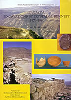

Piotr Bienkowski
Busayra Excavations by Crystal Bennett 1971-1980
Oxford University Press: Oxford, 2003
 |
Crystal Bennett's excavations between 1971 and 1980 unearthed a fortified administrative and religious centre dominated by impressive raised stone buildings containing distinctive fine painted pottery. In this final report on the late Mrs. Bennett's excavations, Piotr Bienkowski and specialist contributors describe and illustrate the architecture, stratigraphy, pottery and other finds in detail. The concluding chapter revises accepted ideas of Busayra's date, nature and role and assesses the site in its proper ancient context in the light of current research on tribal kingdoms. Busayra was settled from the late eighth century to c. 300/200 BC, with some reuse, perhaps for agricultural purposes, in the Nabataean and Roman periods. It is ideally located on an easily defended, high spur among rich arable lands, providing secure opportunities for agriculture and pastoralism and maximizing proximity to the copper mines of Faynan and to the crossing of the Wadi Arabah used by the Arabian incense trade. Piotr Bienkowski concludes that Busayra was not a capital of a nation state, as it is often described, but the administrative and religious centre of the supratribal authority of the heterarchical state of Edom, recognized and treated as kings by the Assyrians. Piotr Bienkowski is Curator of Egyptian and Near Eastern Antiquities and Head of Antiquities at Liverpool Museum, and Honorary Research Fellow at the University of Liverpool. He served as editor of the archaeological journal Levant from 1987 to 1992, and since 1993 has edited the series British Academy Monographs in Archaeology. In 2000 he was annual professor at the W.F. Albright Institute of Archaeological Research in Jerusalem. From 1998 to 2001 the Shelby White-Leon Levy Program for Archaeological Publications at Harvard University funded his research towards this book |
| Back to Publications | Table of Contents |